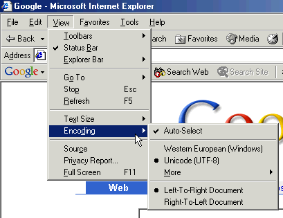

Intended audience: XHTML/HTML coders (using editors or scripting), script developers (PHP, JSP, etc.), Web project managers, and anyone who is wondering whether they should use Unicode.
Are Web sites using Unicode right now?
In this article, Unicode is short for a Unicode encoding.
It is sometimes assumed that Unicode encodings are popular "behind the scenes" but rarely used on the pages of major Web sites.
The initial version of this article, in 2003, pointed to the home pages of the following Web sites, which all used Unicode at the time, as evidence that Unicode was gaining ground:
A blog post by Google in January 2010 indicated that almost 50% of the Web in their sample of several billion pages was now using Unicode. According to Google, the figure for Unicode encoded pages then passed the 50% mark in August 2010. Add to that the figure for ASCII-only web pages (since ASCII is a subset of UTF-8), and the figure rises near to 70%.
The encoding used is UTF-8. UTF-16 encoded pages count for less than 0.01%.
Examples of use in 2010 also include the major social networking sites such as Facebook, Flickr, Linked-In and Twitter.
To find out if a Web page is using Unicode, simply select the "encoding" feature of your Web browser (as shown below using Internet Explorer):

Many more companies do rely on Unicode "behind the scenes" – that is, within their content databases. For example, a content database may hold all text in Unicode format; when the content is pulled to the Web server, it is transcoded into the native encoding.
You can add a logo to your page (provided by the Unicode Consortium) if it validates as UTF-8 using the W3C validator.
Getting started? Introducing Character Sets and Encodings
Multilingual form encoding – UTF-8 can also benefit forms handling
Related links, Authoring HTML & CSS – Characters